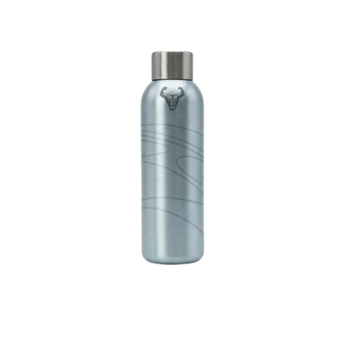
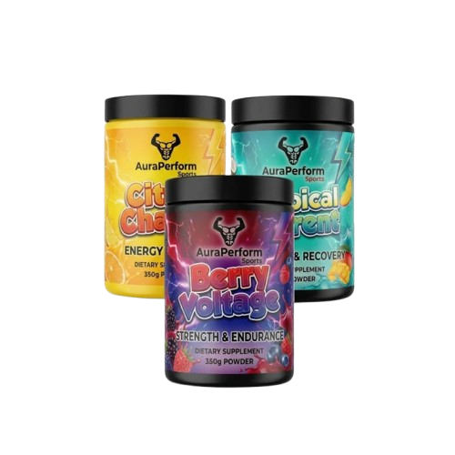

Purposeful formula
AuraPerform combines hydration support and performance ingredients for the hardest part of your session.
About AuraPerform
We created AuraPerform for people who want their hydration and performance ingredients to fit naturally into a real training session.

Our story
AuraPerform began with university students, active routines, and a shared frustration with sports drinks that offered too much sugar, unclear formulas, or ingredients that felt disconnected from training.
We developed a single serving around electrolyte hydration, 3 g of creatine monohydrate, and additional training-support ingredients. Every dose is intended to be clear, practical, and easy to understand.
Our goal is simple: make better training habits easier to sustain.

What we stand for
AuraPerform combines hydration support and performance ingredients for the hardest part of your session.
We show every active ingredient and dose without hiding behind a proprietary blend.
Our products are designed to support a repeatable routine, not replace food, recovery, or long-term training.
Meet the formula